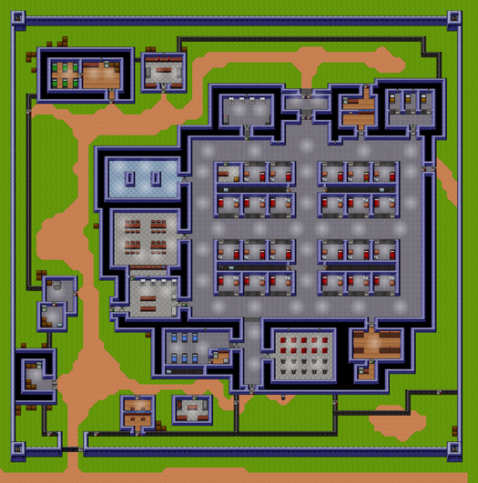

Пен Шенктон
| Пен Шенктон | |
|---|---|

|
|
| Перша в'язниця зроблена в "Ескапістів". | |
| Деталі | |
| Тип в'язниці: Мінімальна безпека | |
| Помірний | |
| Засуджені | 20 |
| Охоронці | 25 |
Ласкаво просимо до штату Пен Шенктон, вашого нового будинку в осяжному майбутньому. Оскільки я був начальником, у нас було декілька зухвалих втечі, але вони були негайно зібрані назад і покарані. На моєму годиннику ніхто не тікає, тому не отримуйте ніяких ідей! Якщо ви забудете будь-яке з правил тут, охоронні кийки будуть тільки надто раді нагадати вам!
~ Охоронець "ім'я" після прибуття до в'язниці
Резюме
Шенктон-Пен-Пен - третя карта, присутня в основній грі, перед якою переходить Сталаг Флухт, а на зміні їй - Джунглі . Він позначений як "помірний", із критою тюрмою, побудованою на трав’янистій рівнині. Він утримує 20 в’язнів (включаючи себе) та 10 офіцерів. У ньому перебуває 1 ув'язнений на камеру. У в'язниці є сповіщувачі контрабанди в їдальні, двері, що ведуть назовні, спортзал, кухня (Примітка: для входу потрібно буде подати заявку на роботу або вкрасти Зелений ключ .), Пральну (також потрібно подати заявку або зелений ключ), Самотні клітини , душові та лазарет. Це звичайні місця, з якими люди часто стикаються. У Шенктона також є своя музика у вільний час, яку використовували у ряді бонусних тюрем.

Розклад
| 08:00 - 09:00 | Ранковий Rollcall |
| 09:00 - 10:00 | Сніданок |
| 10:00 - 13:00 | Період роботи |
| 13:00 - 14:00 | Середній день Rollcall |
| 14:00 - 16:00 | Післяобідній вільний час |
| 16:00 - 17:00 | Вечеря |
| 17:00 - 18:00 | Період вправ |
| 18:00 - 19:00 | Душовий блок |
| 19:00 - 22:00 | Вечір вільного часу |
| 22:00 - 23:00 | Вечірній Rollcall |
| 23:00 - 08:00 | Відбій |
Ваканції
- Двірник (за замовчуванням)
- Пральня
- Кухня
- Woodshop
- Металевий магазин
Стратегії
- Отримайте свою статистику в тренажерному залі + бібліотека приблизно до 80 балів кожна. Найкращий панцир - це вбрання для в'язнів (спорядження ув'язненого + клейка стрічка + аркуш металу), а найкраща зброя - батіг (лезо бритви + дріт + брус) або нунчуки (брус х2 + дріт). Це значно полегшить бій. Ще один варіант - зробити чашку розплавленого шоколаду . Також переконайтеся, що ви отримали 2 шматки деревини для брекетів, оскільки це важливо для останнього кроку.
- Щоб отримати ключ, вам потрібно мати Wad of Putty (тальк-порошок + зубна паста) та Molten Plastic (запальничка + пластиковий посуд або гребінець). Збийте охоронця (поза увагою інших охоронців чи інших ув'язнених це роблять). Візьміть його ключ і комбінуйте його з шпаклівкою, щоб зробити форму. ВАЖЛИВО: поверніть ключ до варти, поки він ще вибитий. (Якщо цей крок пропущено, вас перекинуть в одиночну, а ваш інвентар та стіл очистять.) Потім використовуйте розплавлений пластик + прес-форму для виготовлення пластикового ключа.
- Зробіть листовий мотузок, щоб зійти з даху.
- Продовжуйте пробувати різних охоронців, поки не отримаєте Utility Key (помаранчевий на ПК та Cyan на консолі / мобільному). Ідіть у тунель за камерою.
- Ти зараз на даху. Для прогулянки на вулиці вам потрібен гардеробний одяг (одяг для в'язнів + відбілювач = лазарет, спецодяг + чорнило = наряд охоронця) або ви можете викрасти його у вибитого варти.
- Зробіть міцну лопату / легку лопату або отримайте шпатель (ручка інструменту = файл + пиломатеріал, неяскрава лопата = ручка інструменту + клейка стрічка + листовий метал, ви можете модернізувати лопату більшою кількістю клейкої стрічки + листового металу).
- Копайте під стінами, і ви вільні.
Скорочене пояснення
- Отримайте свою статистику до 80 у кожній
- Зробіть міцну / легку лопату або отримайте кельму
- Отримайте пластиковий корисний ключ
- Піднімайтеся по драбині за камеру аж до даху
- Потрапивши назовні, використовуйте мотузку простирадла, щоб спуститися з даху, виріжте паркан і копайте під стіною, і ви БЕЗКОШТОВНО
Як врятуватися без ключа
Для втечі вам знадобиться міцна лопата, 1 або 2 бруски шоколаду, легка / міцна лопата, форма оберігання, ріжуча нітка або краще ріжуча техніка, підроблена кришка вентиляційного отвору, кришка підробленої огорожі, манекен на ліжко та мотузковий лист. (не підготовка.) Заходьте в отвори у вашій камері вночі і покладіть ліжко-манекен на ліжко. Слідкуйте за вентиляційними отворами над пральною кімнатою. Одягніть наряд охорони та йдіть на дах. Не тримайтеся поза прожектором і використовуйте Лист мотузки, щоб дістатися до землі. Тепер можна позбутися листової мотузки. Ідіть ліворуч / схід, поки не побачите огорожу. Знайдіть ту частину, де зовнішня огорожа шириною 1 блок і вертикальна. Використовуйте Ріжучу нитку / Різальний інструмент для вирізання огорожі. Використовуйте міцну лопату, щоб закопуватися під зовнішню стіну і використовуйте кирку, щоб видалити будь-які скелі на вашому шляху. Коли ти проходиш повз стіну, копайся і ти досяг свободи. Ще один спосіб уникнути цієї тюрми - 1. домогтися розуму до 80 2. Отримати ложки або будь-яку лопату 3. Перейти до прихованої ділянки в бібліотеці 4. Продовжувати копати прямо 5. Копати з своєї нори 6. ВИ БЕЗКОШТОВНО !!! 7.КІЛЬШЕ БІЛЬШЕ ЛЮДЕЙ !!!
Прийняття в'язниці
- Вам знадобиться статистика, що має перевищувати 70
- Отримайте гарну зброю
- Зачекайте робочого часу або вільного часу (я це робив у робочий час після закінчення роботи)
- Вибийте щонайменше 7-8 охоронців, поки не отримаєте листа від начальника
- Підійдіть до південного виходу з будівлі, сповіщувачі контрабанди не працюють після отримання листа, а також снайпери.
- Вийдіть звідти за допомогою дверей
- БЕЗКОШТОВНО РОБИТИ БІЛЬШЕ БАНКІВ
Довга і звивиста дорога ... яка веде ... до вашої клітини?
Це найдовша втеча, але сама підпільна втеча. Зауважте, що будь-яка втеча з в'язниці за допомогою цього методу може зайняти 10-12 днів або довше.
Підготовка
- Візьміть якомога більше пластикових ножів та пластикових виделок. Поверніться на секунди. (Я фактично очистив весь ряд з ложки та виделки!).
- Купуйте / розграбуйте / викрадайте / знайдіть канатику та фольгу у засудженого. Надіньте 2-3 контрабандні сумки (3 було б більш доцільно. Якщо можете, можна виготовити 3 міцні контрабандні сумки, тобто 4-6 мішок контрабанди)
- Отримайте роботу в Woodshop, піднявши свій інтелект до 70-80.
- Викопніть якомога більше деревини з лісоматеріалів. Для втечі вам знадобиться багато деревини. Очікуйте, що пройдете через 1-2 мішки, варті деревини.
- Отримайте роботу з Metalshop, піднявши свій інтелект до 70-80.
- Вимкніть стільки металу, скільки ви можете. Для втечі вам також знадобиться багато металу. Очікуйте, що пройдете через металеві 1-2 мішечки.
- Знайдіть 6-7 рулонів клейкої стрічки.
- Очистіть ВСЕ з вашого столу. Киньте гребінець, мило та все інше, що потрапило у ваш стіл. Закладіть у свій стіл металеві, дерев'яні та клейкі стрічки. Якщо місця немає, приберіть його в туалет.
- Вироби суворий лопату та міцну кірку
- Використовуючи вилки, відколюйте стіну до стіни, поки вона не зламається і не відкриється корисний коридор.
- Отримайте роботу на кухні.
- Винесіть з кухні стільки вареної курки.
- У Lights Out покладіть ліжко-манекен в ліжко, перейдіть до корисного коридору та копайте прямо на схід. ПОКРИТТЬ КЛІТНІ БАРИ З ЛІЗАМИ!
- Візьміть жмені пластикових ножів і опустіть їх у тунель. Підкріпіть тунель брекетами.
- Відколюйся від будь-яких скель, які перекривають твій шлях із міцною киркою.
- Копайте, поки не доїдете до тунелю довжиною 18 блоків, використовуючи пластикові ножі та лопату. Якщо ви не можете досягти мінімальної довжини або якщо ваша міцна лопата майже зламана, зупиніть і збирайте більше ложок на наступний день. Спершу користуйтеся пластиковими ножами, і ніколи не використовуйте лопату більше ніж два рази на блок щодня. Якщо ваша лопата опуститься нижче 4%, припиніть її повністю використовувати.
- Як тільки буде досягнуто вашої 18-меткової межі, викопайте прямо по стінах периметра і втечі.
Класна втеча, яка потребує тривалої підготовки
Ось елементи, які вам потрібні для втечі:
- Грейплінг гачок
- Постільна білизна (1 або 2)
- Підроблений корисний ключ
- Спецодяг Охоронний одяг АБО Спецодяг
- Легкі фрези (легка і міцна робота)
Тепер ось як ви рятуєтеся:
- Отримайте 4-6 пластикових виделок.
- Отримайте 3 простирадла.
- Отримайте плакат або підроблений стіновий блок (рекомендується плакат)
- Покладіть простирадла над вашою камерою, щоб охоронці не бачили, що ви відбиваєтесь (ПРИМІТКА. Якщо ваше ім’я буде намальовано Rollcall, вони знімуть аркуші, що покривають вашу камеру)
- Відловіть вал утиліти (чорна зона за вашою камерою, ПРИМІТКА. Не ставте жодних предметів біля помаранчевої двері, інакше охоронця помітять її та забирайте предмети у вал)
- Отримайте ванночку з тальку та порошок зубної пасти.
- Отримайте інтелект до 70.
- Знайдіть охорону за допомогою помаранчевої клавіші (це друга охорона в розділі перейменування символів перед початком гри)
- Вийміть його або за чашкою розплавленого шоколаду, або за високою статистикою)
- Намалюйте ватну шпаклівку (порошок тальку та зубна паста)
- Візьміть його ключ та його вбрання, пам’ятайте, не зловживайте це робити.
- Розмістіть цвіль утилітного ключа.
- Отримайте запальничку і гребінець або зубну щітку.
- Craft Розплавлений пластик з двох.
- Створіть плісню утилітного ключа та розплавлений пластик разом, щоб зробити підроблений корисний ключ (потрібно 70 інтелекту)
- Отримайте 2x тарілку, клейку стрічку та довжину мотузки.
- Отримайте інтелект до 90.
- Поєднайте два тросики та стрічковий канал, щоб зробити головку грейфера.
- Потім комбінуйте грейферну голівку з довжиною мотузки, щоб зробити гачок-граппінг.
- Отримайте два файли та рулону стрічки.
- Створіть із них легкі фрези (оновлення необов’язково але можна зробити так вистачить на довше)
- Отримайте 2-4 простирадла.
- Зробіть 1-2 листові мотузки.
- Отримайте 1 простирадло та 2 подушки.
- Зробіть ліжко-манекен.
Тепер ось як ви рятуєтеся:
- На Lights Out розмістіть манекен на ліжку на своєму ліжку, а також 3 простирадла накрийте стільникові бруски.
- Пройдіть крізь стіну, використовуючи плакат і покладіть його назад.
- Піднімайтеся по сходах (має бути праворуч від валу)
- Поверніть праворуч ще раз, поки не побачите іншу сходи.
- Підніміться, ви будете на даху.
- Поверніть ліворуч, уникаючи прожекторів (Вам потрібно буде пройти кілька шарів даху, використовуючи листовий мотузок і гачок для захвату)
- Ви знайдете сіру тонку лінію, яка веде до іншої області, перетнете її, але не падайте!
- Ви побачите паркан, виріжте його. Не хвилюйтеся про використання підробленого паркану для його прикриття. Немає потреби.
- Ще раз використовуйте гачок, щоб перейти через головну стіну в'язниці
- Вітаємо! Ви вільні! Тепер до наступного виклику ...
Втеча щасливого Speedrunner
Єдиний предмет, необхідний для цього втечі, - це міцна лопата (і варена курка чи дві для енергетичних цілей, хоча вони часто непотрібні).
ПЛАН
- Придбайте міцну лопату. Найпростіший спосіб зробити це - заглянувши за парти і піднявши свій інтелект, коли це можливо. Щоб швидше здійснити втечу, пропустіть певні події протягом дня і втрачайте роботу з двірниками на користь розкрадання та навчання. Зробіть прохання заробити гроші, оскільки деякі продавці матимуть товар, який вам відчайдушно потрібен. Це часто призведе до нагрівання вашої значної кількості, але, так, хто дбає про те, що думають смердючі охоронці?
- Переконайтеся, що у вас немає іншого контрабанди на столі, перш ніж виконати решту плану. Охоронці можуть похитнути вашу камеру, поки ваш план перебуває в русі, і негайно увімкнути вас в одиночну камеру без жодних докорів. Це випливає з особистого досвіду.
- Обладнайте міцну лопату у свій перший слот. Всі інші слоти повинні бути порожніми (якщо ви не приготували курку, в такому випадку продовжуйте). Майте на увазі, що вам знадобиться запасний запас, щоб зібрати бруд від копання.
- До 22:00 вийдіть із основної в'язничної зони та увійдіть до тюремного подвір’я на самому північному виході (найближчому до вашої камери). Після 22:00 це стане неможливим, оскільки двері будуть заблоковані для вечірнього дзвінка. Найпівденніший вихід не є ідеальним, оскільки він містить детектор контрабанди.
- Подорожуйте ліворуч по стежці, поки не доїдете до дверей, для якої потрібен ключ адміністратора (білий). Ця брама знаходиться зліва від візитного центру.
- Вибирайте там, поки в'язниця не замикається. Будьте обережні, щоб охоронці перевіряли райони праворуч і зліва.
- Як тільки замок почнеться, ви перебуваєте в 90 секундах, щоб вийти звідти - копайте так, як від цього залежить ваше життя, вниз під парканом і поза !!
- Насолоджуйтесь своєю новою свободою та своїм пряним високим балом (адже, імовірно, ви врятувалися менше ніж за тиждень) !!
Примітки
- Найкращий шлях для втечі - це отвори над осередком, оскільки це веде на дах, потім землю, потім шлях до генератора і вихід на свободу, хоча є спосіб втекти візитною кабіною, і копаючи його поетапно.
- Ще один спосіб втекти за допомогою вентиляційних отворів - це перехід на захід, частина даху від вентиляційних отворів, перехід на трубу, схоплювання, обрізання паркану, ходіння по іншій трубі та обхоплення зовнішньої стіни на свободу.
- Більш важкий спосіб втекти - зняти кожного охоронця, і білий замок на півдні буде розблокований.
- снує помітна помилка, коли, якщо ви виходите з кімнати двірника, а охоронні місця, які ви залишаєте, ви отримуєте тепло охоронця через "перебування в камері іншого ув'язненого", незважаючи на те, що насправді не знаходитесь в одній. Це може бути не в консольних версіях.
- Сітка передньої стінки, що оточує головну браму, може проникати. Отримайте кілька гребінців / пластикових ножів, зачекайте до 1 ранку і ви вільні!